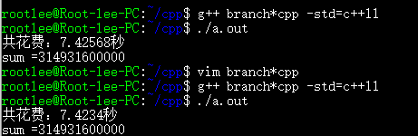

C++性能榨汁机之分支预测器(4)
前言
在上篇文章中，我们通过分析一段典型程序的汇编级代码更加清楚的看到了分支预测对程序性能的影响，当数据对分支预测器预测不友好的时候，我们的程序性能下降巨大。那么，怎么才能避免分支预测频繁出错对我们程序运行的不利影响呢？
用条件传送替代条件控制转移
分支预测对有规律的分支跳转可以实现非常高的预测正确率，比如在循环判断中，在循环终止之前，分支预测都可以基本保证完全的预测正确，预测错误只会出现在最后跳出循环的条件满足时。但是，对于每次跳转结果都不确定的分支判断，分支预测率的预测正确率就很低了，可能只有50%左右，基本相当于每次都随机猜测，这样的情况下，流水线会经常被打断，影响程序性能。对于这种严重依赖于数据的分支跳转命令，最好的替代方法就是条件传送指令。
在使用条件传送的条件下，命令中是没有跳转命令的，也就避免了使用分支预测器去预测一个很难预测的分支。
如何写条件传送代码？
对于C和C++这样的高级语言是没有提供控制底层实现到底是使用条件控制转移指令还是条件传送指令的功能的，底层命令实现靠编译器实现。但是，我们可以通过我们写代码的具体方法去间接影响编译器生成的汇编代码，从而达到使用条件传送命令替代条件控制转移命令的目的。
下面的C++代码经过编译器编译后生成的汇编代码是通过条件控制转移命令实现分支跳转的（我们在上一篇文章中已经就此代码进行了分析）：
1 | for(unsigned c = 0; c < arraySize; ++c){ |
上述代码的汇编代码：
1 | .L8: movl $0, -131104(%rbp) .L7: cmpl $32767, -131104(%rbp) ja .L5 movl -131104(%rbp), %eax movl -131088(%rbp,%rax,4), %eax cmpl $127, %eax jle .L6 movl -131104(%rbp), %eax movl -131088(%rbp,%rax,4), %eax cltq addq %rax, -131096(%rbp) .L6: addl $1, -131104(%rbp) jmp .L7 |
其中jle .L6就是条件控制转移指令，当数据随机的时候，此命令的整体效率会极大降低。
但如果我们使用下面C++代码实现上面程序同样的功能的话，就可以避免产生条件控制转移指令：
1 | for(unsigned c = 0; c < arraySize; ++c){ |
上述C++代码首先使用一个减法和移位获取data[c]与128比较的结果，如果data[c] >= 128，则t为0，否则t为1，然后将t取非操作并于data[c]做与操作，以决定累加到sum上的数据是0还是data[c]。产生的汇编代码如下：
1 | .L6: cmpl $32767, -131108(%rbp) ja .L5 movl -131108(%rbp), %eax movl -131088(%rbp,%rax,4), %eax addl $-128, %eax sarl $31, %eax movl %eax, -131100(%rbp) movl -131100(%rbp), %eax notl %eax movl %eax, %edx movl -131108(%rbp), %eax movl -131088(%rbp,%rax,4), %eax andl %edx, %eax cltq addq %rax, -131096(%rbp) addl $1, -131108(%rbp) jmp .L6 |
可以看到，上述汇编代码完整实现了我们C++代码的思路，而且没有产生分支控制跳转命令，我们通过一些hack技巧实现了条件传送命令替代条件控制跳转命令，这样的代码对于任何数据表现都是一样的，即程序的性能不会因为输入数据的随机与否而变化。
经过测试，修改过后的程序比随机数据＋条件控制跳转程序提高了３倍，而且性能表现对于可预测数据和随机数据均一致。

第一个花费时间7.42568秒是程序在随机数据上的表现结果，第二个花费时间7.4234秒是程序在排序后数据上的表现结果，可以看多两者表现相差可以忽略不计，可以说更改后的程序达到了性能与输入数据无关的目的。
总结
上面代码将条件控制转移指令转换成了条件传送代码，但是，代码的可读性急剧下降，int t = (data[c] - 128) >> 31; sum += ~t & data[c];这句代码很难让人一眼看出代码的目的，这种代码会对整个项目的维护带来巨大麻烦。
所以，在现代处理器和现代编译器的帮助下，千万不要过度关心分支预测带来的影响，对于程序中大部分分支命令，分支预测器都可以有很高的预测正确率，而对于那些分支预测器很难预测的分支，现代编译器可以对其进行自动优化，比如gcc中开启-O3优化的时候，编译器会自动把条件跳转转为条件传送以提高程序运行效率。
大部分情况下，请相信处理器、相信编译器！有在完全确定了程序的性能瓶颈所在的时候再去针对这部分代码做特殊优化，避免提前优化和过度优化。